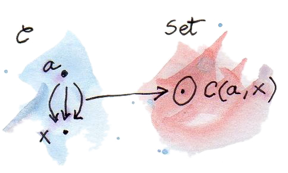

15 Functorที่มีตัวแทนได้ (Sketch)
มันถึงเวลาแล้วที่เราจะพูดเกี่ยวกัยsetนิดหน่อย นักคณิตศาสตร์ทั้งรักทั้งเกลียดทฤษฎีset มันคือภาษาassemblyของเลข(อย่างน้อยก็เป็นสิ่งที่เคยเป็น) ทฤษฎีcategoryพยามยายามที่หลีกหนีจากทฤษฎีsetในระดับหนึ่ง ตัวอย่างเช่นมันเป็นสิ่งที่รู้อยู่แล้วว่าsetของsetทั้งหมดไม่มีอยู่แต่categoryของsetทั้งหมด\(\textbf{Set}\)มีอยู่ ก็ดี ในอีกฝั่งหนึ่งเราสมมติว่าmoprhismระหว่างสองวัตถุใดๆก็ตามในcategoryก่อให้เกิดset เราถึงกับเรียกมันว่าhom-set เอาจริงๆแล้วได้มีแขนงของทฤษฎีcategoryที่morphismไม่ได้ก่อให้เกิดset แทนที่อย่างนั้นพวกมันคือวัตถุในอีกcategoryหนึ่ง categoryเหล่านั้นที่ใช้hom-objectแทนที่จะเป็นhom-set ถูกเรียกว่าcategoryแบบenriched แต่ในสิ่งที่ตามมาเราจะอยู่กับcategoryที่ใช้hom-setแบบที่ทำมา
setคือสิ่งที่ใกล้ที่สุดกับก้อนที่ไม่มีอะไรที่คุณสามารถหามาได้ภายนอกของวัตถุแบบcategory setนั้นมีสมาชิกแต่คุณไม่สามารถบอกเกี่ยวกับสมาชิดต่างๆของมันได้เลย ถ้าคุณมีsetที่จำกัด คุณสามารถที่จะนับสมาชิกชองมัน คุณที่ก็อาจจะสามารถนับสมาชิกของsetไม่จำกัดโดยการใช้ตัวเลขcardinal ตัวอย่างsetของจำนวนธรรมชาตินั้นเล็กกว่าsetของจำนวนจริงถึงแม้ทั้งสองจะเป็นที่ไม่มีที่สิ้นสุดแต่ ก็อาจจะน่าแปลกใจที่setของจำนวนตรรกยะนั้นมีขนาดที่เท่ากับsetของจำนวนธรรมชาติ
นอกเหนือไปจากนั้น ข้อมูลทั้งหมดเกี่ยวกับsetสามารถที่จะถูกเขียนในfunctionระหว่างมัน(โดยเฉพาะตัวที่สามารถinvertibleนั้นถูกเรียกว่าisomorphism) สำหรับทางที่สำคัญที่สุดsetที่isomorphicกันนั้นเหมือนกัน ก่อนที่ผมเรียนความโกรธเกรี้ยวนักคณิตศาสตร์แบบพื้นฐาน ให้ผมได้อธิบายความแตกต่างความเท่ากันและisomorphismคือความสำคัญในระดับพื้นฐาน ในความเป็นจริงแล้วมันคือสิ่งที่เป็นที่สนใจของสาขาของคณิตศาสตร์ล่าสุดอย่างHomotopy Type Theory (HoTT) ผมได้กล่าวถึงHoTTเพราะว่ามันคือทฤษฎีทางคณิตศาสตร์บริสุทธิ์ที่นำแรงบันดาลใจมาจากคอมพิวเตอร์และหนึ่งของผู้สนับสนุนVladimir Voevodskyได้ค้นพบในตอนที่ทำการศึกษาของเครื่องพิสูจน์ทฤษฎีCoq ปฏิสัมพันธ์ระหว่างเลขกับการเขียนโปรแกรมไปยังทั้งสองด้าน
บทเรียนเกี่ยวกับsetคือว่ามันเป็นไปได้ในการเลือกsetของสมาชิกที่ไม่เหมือนกัน ตัวอย่างเช่น เราสามารถบอกว่าsetของการแปลงแบบธรรมชาตินั้นisomorphicกับบางsetของmorphism เพราะว่าsetก็คือset isomorphismในกรณีนี้แค่หมายความว่าสำหรับทุกๆการแปลงแบบธรรมชาติจากsetหนึ่งได้มีmorphismที่เป็นเอกลักษณ์(และอันเดียว)จากอีกsetหนึ่งและในทางกลับกัน
พวกมันสามารถถูกจับคู่กับพวกมันเอง คุณไม่สามารถเปรียบเทียบแอปเปิ้ลกับส้ม ถ้าพวกมันคือวัตถุจากต่างๆcategoryแต่คุณสามารถเปรียบเทียบsetของแอปเปิ้ลกับsetของส้ม ในบ่อยครั้งการแปลงปัญหาทางcategoryไปยังปัญหาทางทฤษฎีsetให้เราได้ข้อมูลเชิงลึกหรือแม้กระทั่งให้เราสามารถพิสูจน์ทฤษฎีบทที่มีค่า
15.1 FunctorแบบHom
ในทุกๆcategoryมากับชุดของการโยงไปยัง\(\textbf{Set}\)ในแบบมาตรฐาน(canonical) การโยงแบบนั้นคือจริงๆแล้วคือfunctor ดังนั้นพวกมันคงไว้ที่โครงสร้างของcategory
เรามาคงที่หนึ่งในวัตถุ\(a\)ของ\(\textbf{C}\)และเลือกอีกวัตถุ\(x\)ใน\(\textbf{C}\) hom-set\(\textbf{C}(a,x)\)คือset คือวัตถุใน\(\textbf{Set}\) ในตอนที่เราเปลี่ยนแปลงวัตถุ\(x\)โดยการเก็บ\(a\)ให้คงที่\(\textbf{C}(a,x)\)ก็จะเปลี่ยนแปลงใน\(\textbf{Set}\) ดังนั้นเราได้มีการโยงจาก\(x\)ไปยัง\(\textbf{Set}\)

ถ้าเราต้องการที่จะย้ำความจริงที่ว่าพวกเรากำลังพิจารณาhom-setในฐานะการโยงในargumentที่สองของมัน เราจะใช้สัญลักษณ์\(\textbf{C}(a,-)\)คู่กับขีดที่เป็นเหมือนตัวแทนสำหรับargumentนั้น
การโยงแบบนี้ของวัตถุนั้นถูกขยายอย่างง่ายดายไปยังการโยงของmorphism เรามานำmorphism\(f\)ใน\(\textbf{C}\)ระหว่างวัตถุ\(x\)และ\(y\)ใดๆก็ตาม วัตถุ\(x\)นั้นถูกโยงไปยังset\(\textbf{C}(a,x)\) และวัตถุ\(y\)ที่ถูกโยงไปยัง\(\textbf{C}(a,y)\)ถายใต้การโยงที่เราได้นิยาม ถ้าการโยงแบบนี้ก็คือfunctor \(f\)ต้องเป็นการโยงไปยังfunctionระหว่างsetทั้งสอง\(\textbf{C}(a,x)\rightarrow\textbf{C}(a,y)\)
เรามานิยามfunctionนี้ในแต่ละจุด ที่ว่าในแต่และargumentที่แยกออกมา สำหรับargumentที่เราควรที่จะเลือกสมาชิกใดๆก็ตามของ\(\textbf{C}(a,x)\) เรามาเลือกมันว่า\(h\) morphismนั้นสามารถประกอบกันได้ ถ้าพวกมันตรงกันทุกส่วน ดังนั้นมันเกิดขึ้นได้ที่ว่า เป้าหมายของ\(h\)ตรงกันกับแหล่งที่มาของ\(f\)ดังนั้นการประกอบของมันคือ
\[ f\circ h :: a\rightarrow y \]
คือmorphismจาก\(a\)ไปยัง\(y\)มันคือสมาชิกของ\(\textbf{C}(a,y)\)

เราได้แค่พบfunctionของเราจาก\(\textbf{C}(a,x)\)ไปยัง\(\textbf{C}(a,y)\)ที่สามารถเป็นimageของ\(f\) ถ้าไม่ได้มีความอันตรายจากความสับสน เราจะเขียนfunctionจะถูกliftในฐานะ\(\textbf{C}(a,f)\)และactionของมันบนmorphism\(h\)ในฐานะ
\[ \textbf{C}(a,f)h = f\circ h \]
เนื่องด้วยการสร้างนี้สามารถใช้ได้ในทุกๆcategory มันก็ต้องทำงานได้ในcategoryของtypeของHaskell ในHaskell hom-functorนั้นรู้จักในฐานะที่ดีกว่าว่าReaderfunctor
type Reader a x = a -> xinstance Functor (Reader a) where
fmap f h = f . hในตอนนี้เรามาพิจารณาสิ่งที่เกิดขึ้น ถ้าแทนที่จะให้แหล่งของhom-setนั้นคงที่ เราทำให้เป้าหมายของมันคงที่ ในอีกความหมายเรากำลังถามคำถามว่าถ้าการโยง\(\textbf{C}(-,a)\)นั้นก็เป็นfunctorหรือเปล่า มันคือแต่แทนที่จะเป็นcovariant มันคือcontravariant นั้นก็เพราะว่าการจับคู่ในแบบเดียวกันของmorphismกับทุกส่วนทำให้เกิดการประกอบด้านหลัง(postcomposition)โดย\(f\) แทนที่จะทำการประกอบก่อนในแบบกรณีกับ\(\textbf{C}(a,-)\)
เราได้เห็นfunctorแบบcontravariantในHaskell เราเรียกมันว่าOp
type Op a x = x -> ainstance Contravariant (Op a) where
contramap f h = h . fสุดท้ายแล้วถ้าเราอนุญาติให้ทั้งสองวัตถุเปลี่ยนไปมา เราก็จะได้profunctor\(\textbf{C}(-,=)\)ที่เป็นcontravariantในargumentแรกและcovariantในตัวที่สอง (เพื่อที่จะย้ำความจริงที่ว่าทั้งสองarugmentอาจจะเปลี่ยนไปมาโดยที่ไม่ขึ้นกับกันเอง เราได้ใข้ขีดสองขีดในฐานะตัวแทนที่สอง) เราได้เห็นprofunctorนั้นมาก่อน ในตอนที่เราพูดเกี่ยวกับความเป็นfunctor
instance Profunctor (->) where
dimap ab cd bc = cd . bc . ab
lmap = flip (.)
rmap = (.)บทเรียนที่สำคัญคือว่าการสังเกตนี้สามารถใช้ได้ในทุกcategoryก็คือการโยงของวัตถุไปยังhom-setนั้นมีความเป็นfunctor เนื่อด้วยความเป็นcontravarianceนั้นเท่ากับการโยงจากcategoryตรงข้าม เราสามารถเขียนความจริงนี้อย่างรวบรัดว่า
\[ C(-,=) :: \textbf{C}^\text{op}\times\textbf{C}\rightarrow\textbf{Set} \]
15.2 Functorที่มีตัวแทนได้
เราได้เห็นแล้วว่าในทุกๆตัวเลือกของวัตถุ\(a\)ใน\(\textbf{C}\) เราก็จะมีfunctionจาก\(\textbf{C}\)ไปยัง\(\textbf{Set}\) การโยงที่คงโครงสร้างไว้ไปยัง\(\textbf{Set}\)นั้นมันจะถูกเรียกว่าตัวแทน เรากำลัง แทนที่วัตถุและmorphismใน\(\textbf{C}\)ในฐานะsetและfunctionใน\(\textbf{Set}\)
functor\(\textbf{C}(a,-)\)มันเองมันจะถูกเรียกว่าสามาถมีตัวแทนได้ ให้กว้างกว่านี้ functor\(F\)ใดๆก็ตามที่isomorphicแบบธรรมชาติกับhom-functorในบางตัวเลือกของ\(a\)นั้นถูกเรียกว่าสามาถมีตัวแทนได้ functorแบบนี้ต้องมีค่าแบบ\(\textbf{Set}\)เนื่องว่า\(\textbf{C}(a,-)\)ก็มีค่าเหมือนกัน
ผมบอกก่อนหน้านี้ว่าเรามันจะคิดถึงsetแบบisomorphicในฐานะความเท่ากัน(identical) สิ่งที่ทั่วไปมากกว่านี้ เราคิดถึงวัตถุต่างๆที่isomorphicในcategoryนั้นเท่ากัน นั้นก็เพราะว่าวัตถุไม่มีโครงสร้างไปมากกว่าความสัมพันธ์ไปยังอีกวัตถุหนึ่ง (และพวกมันเอง)ผ่านmorphism
ตัวอย่างเช่น เราได้พูดเกี่ยวcategoryของmonoid\(\textbf{Mon}\)ก่อนหน้านี้ที่ว่าถูกก่อมาจากsetในจุดเริ่มต้น แต่เราได้ระมัดระวังในการเลือกในฐานะmorphismแค่ที่functionต่างๆที่คงไว้ที่โครงสร้างทางmonoidalของsetเหล่านี้ ดังนั้นถ้าสองวัตถุใน\(\textbf{Mon}\)นั้นคือisomorphic หมายความว่าได้มีmorphismที่สามารถinvertibleได้ระหว่างพวกมันแล้สวัตถุทั้งสองก็มีโครงสร้างแบบเดียวกัน ถ้าเราได้ไปส่องไปยังsetและfunctionต่างๆที่พวกกันนั้นก่อมาจาก เราได้เห็นแล้วว่าสมาชิกunitของmonoidหนึ่งถูกโยงไปยังสมาชิกunitของอีกmonoidหนึ่ง และการคูณของสองสมาชิกถูกโยงไปยังการคูณของการโยงของทั้งสอง
ในเหตุผลเดียวกันสามารถที่จะถูกใช้กับfunctor functorระหว่างสองcategoryก่อให้เกิดcategoryที่การแปลงแบบธรรมชาติเล่นบทของmorphism ดังนั้นสองfunctorนั้นisomorphicและสามารถที่จะถูกคิดได้ในฐานะความเท่ากัน ถ้าได้มีแปลงแบบธรรมชาติที่สามารถinvertได้ระหว่างมัน
เรามาวิเคราะห์นิยามของfunctorที่มีตัวแทนได้จากมุมมองนี้ สำหรับ\(F\)ที่มีตัวแทนได้ เราต้องการว่า ได้มีวัตถุ\(a\)ใน\(\textbf{C}\) แปลงแบบธรรมชาติหนึ่ง\(\alpha\)จาก\(\textbf{C}(a,-)\)ไปยัง\(F\) แปลงแบบธรรมชาติอีกตัว\(\beta\)ในทิศตรงกันข้าม และจากการประกอบกับของมันเป็นแปลงแบบธรรมชาติแบบidentity
เรามามองที่ส่วนประกอบของ\(\alpha\)ที่บางวัตถุ\(x\)มันคือfunctionใน\(\textbf{Set}\)
\[ \alpha_x :: \textbf{C}(a,x) \rightarrow Fx \]
เงื่อนไขความเป็นธรรมชาติของการแปลงนี้บอกเราว่า ในทุกๆmorphism\(f\)จาก\(x\)ไปยัง\(y\)diagramต่อไปนี้commutesว่า
\[ Ff\circ\alpha_x = \alpha_y\circ \textbf{C}(a,f) \]
ในHaskell เราอาจจะแทนที่แปลงแบบธรรมชาติด้วยfunctionแบบpolymorphic
alpha :: forall x. (a -> x) -> F xคู่กับquantifierอย่างforall เงื่อนไขความเป็นธรรมชาติคือ
fmap f . alpha = alpha . fmap fที่สามารถสำเร็จได้เพราะว่าความเป็นparametricity(เป็นหนึ่งในทฤษฎีบทที่มาได้มาแบบอัตโนมัติที่ผมได้บอกก่อนหน้านี้) คู่กับความเข้าใจว่าfmapทางด้างช้ายถูกนิยามโดยfunctor\(F\)ในทางกลับกันสิ่งทีี่อยู่ด้านขวานั้นถูกนิยามโดยfunctorนักอ่าน เนื่องด้วยfmapสำหรับนักอ่านคือแค่การประกอบก่อนหน้า เราสามารถที่จะทำให้ชัดแจ้งมากขึ้น กระทำบน\(h\)ที่เป็นสมาชิกของ\(\textbf{C}(a,x)\)
fmap f (alpha h) = alpha (f . h)ในการแปลงอีกแบบหนึ่งอย่างbetaไปยังอีกทิศทางหนึ่ง
beta :: forall x. F x -> (a -> x)มันต้องเคารพเงื่อนไขความเป็นธรรมชาติและมันต้องเป็นinverseของalpha
alpha . beta = id = beta . alphaเราจะเห็นหลังจากนี้ว่าการแปลงแบบธรรมชาติจาก\(\textbf{C}(a,-)\)ไปยังทุกๆfunctorที่มีค่าเป็น\(\textbf{Set}\)นั้นต้องมีตัวตนอยู่ตราบเท่าที\(Fa\)นั้นไม่ว่าง(lemmaของYoneda)แต่มันไม่จำเป็นต้องinvertได้
ให้ผมให้ตัวอย่างกับคุณในHaskellกับfunctorแบบlistและIntในฐานะa ในที่นี้คือการแปลงแบบธรรมชาติที่สามารถทำงานได้
alpha :: forall x. (Int -> x) -> [x]
alpha h = map h [12]ผมได้เลือกตัวเลขอะไรก็ตามในHaskellอย่าง\(12\)และสร้างlistที่มีสมาชิกเดี่ยวด้วยมัน แล้วผมสามารถทำการfmapfunctionhข้างบนlistนี้และได้มาที่listของtypeที่ถูกนำกลับมาโดยh (ได้มีหลายหลายการแปลงแบบนี้เท่าที่มีlistของจำนวนเต็ม)
เงื่อนไขความเป็นธรรมชาตินั้นมีความเท่ากันกับหความประกอบกันได้ของmap(ที่เป็นรูปแบบของfmapในlist)
map f (map h [12]) = map (f . h) [12]แต่ถ้าเราได้ลองที่จะหาการแปลงในด้านกลับ เราอาจจะต้องที่จะไปจากlistของtypeใดๆก็ตามxไปยังfunctionที่returnxว่า
beta :: forall x. [x] -> (Int -> x)คุณอาจจะคิดถึงการเอาxกลับคืนมาจากlistอย่างเช่นการใช้headแต่นั้นจะไม่สามารถใช้ได้กับlistว่าง สังเกตว่าไม่มีทางเลือกสำหรับtypea(แทนที่ของInt)ที่จะสามารถใช้ได้ในที่นี้ ดังนั้นfunctorของlistนั้นไม่สามารถมีตัวแทนได้
ลองจำในตอนที่เราได้พูดเกี่ยวกับ(endo-)functorของHaskellที่เป็นเหมือนกับภาชนะ? ในแบบเดียวกันเราสามารถที่จะคิดถึงfunctorที่มีตัวแทนได้ในฐานะภาชนะสำหรับการเก็บผลลัพธ์ของการเรียกfunctionที่ถูดจำไว้ (สมาชิกของhom-setในHaskellก็คือแค่functions) วัตถุที่เป็นตัวแทนอย่างtype\(a\)ใน\(\textbf{C}(a,-)\) สามารถที่จะถูกคิดถึงในฐานtypeแบบkeyที่ที่เราสามารถเข้าถึงค่าแบบตารางของfunction การแปลงที่เราเรียกว่าalphaนั้นถูกเรียกว่าtabulateและinverseของมันbetaถูกเรียกว่าindex ในที่นี้คือนิยามclassRepresentable(ที่ทำให้ง่ายขึ้นนิดหน่อย)
class Representable f where
type Rep f :: *
tabulate :: (Rep f -> x) -> f x
index :: f x -> Rep f -> xสังเกตว่าtype\(a\)ที่เป็นตัวแทนที่ถูกเรียกว่าRep f ในที่นี้คือส่วนของนิยามของRepresentable ดอกจันทร์แค่หมายความว่าRep fคือtype (ในทางตรงกันข้ามของconstructorของtypeหรือในแบบที่แปลกใหม่กว่า)
ในlistที่ไม่จำกัดหรือstreamที่ไม่สามารถเป็นที่ว่างได้นั้นสามารถมีตัวแทนได้
data Stream x = Cons x (Stream x)คุณสามารถที่จะคิดถึงพวกมันในฐานะค่าที่ถูกจำได้ของfunctionที่นำIntegerในฐานะargument(ถ้าให้พูดอย่างเคร่งครัด ผมควรที่จะใช้ตัวเลขธรรมชาติที่ไม่เป็นตัวลบ แต่ผมไม่ต้องการที่จะให้codeของผมชับช้อน)
ในการทำการtabulatefunctionแบบนี้ คุณสร้างstreamที่ไม่จำกัดของค่าต่างๆ แน่นอนว่ามันนั้นเป็นไปได้ก็เพราะว่าHaskellนั้นlazy ค่าที่ถูกประเมินตามคำขอ คุณเขาถึงค่าต่างๆโดยการใช้index
instance Representable Stream where
type Rep Stream = Integer
tabulate f = Cons (f 0) (tabulate (f . (+1)))
index (Cons b bs) n = if n == 0 then b else index bs (n - 1)มันน่าสนใจที่คุณสามารถเขียนแผนการจำในการครอบคลุมทั้งชุดของfunctionกับtypeของสิ่งที่returnแบบใดๆก็ได้
ความมีตัวแทนได้สำหรับfunctorแบบcontravariantนั้นนิยามคล้ายกันเพียงแต่ว่าเราให้argumentที่สองของ\(\textbf{C}(-,a)\)คงที่ หรือในทางเดียวกันเราอาจจะพิจารณาfunctorจาก\(\textbf{C}^\text{op}\)ไปยัง\(\textbf{Set}\)เพราะว่า\(\textbf{C}^\text{op}(a,-)\)นั้นเหมือนกันกับ\(\textbf{C}(-,a)\)
ได้มีการพลิกแปรงของความมีตัวแทนได้ ลองจำว่าhom-setสามารถในตัวมันเองถูกคิดในฐานะวัตถุแบบexponentialในcategoryแบบCartesian closed hom-setอย่าง\(\textbf{C}(a,x)\)นั้นเท่ากันกับ\(x^a\) และfunctorที่มีตัวแทนได้เราสามารถเขียนว่า \(-^a=F\)
เรานำlogarithmมาใช้ทั้งสองฝั่งเพื่อความสนุก \(a=\log F\)
แน่นอนว่า สิ่งนี้นันเป็นการเปลี่ยนแปลงที่เป็นทางการจริงๆแต่ถ้าคุณรู้บางคุณสมบัติของlograithm มันข้อนข้างที่มีประโยชน์ห โดยเฉพาะเช่น มันกลายมาเป็นว่าfunctorที่ขึ้นมาจากtypeแบบproductสามารถมีtypeแบบsumเป็นตัวแทนและว่าfunctorแบบtypeแบบsumนั้นไม่สามารถมีตัวแทนได้โดยทั่วไป(ตัวอย่างเช่นfunctorแบบlist)
สุดท้ายแล้วสังเกตว่าfunctorที่มีตัวแทนได้ให้เราการเขียน(implementation)ที่แตกต่างของสิ่งเดียวกัน (ตัวหนึ่งเป็นfunction อีกตัวหนึ่งคือdata structure) พวกมันมีเนื้อหาข้างใน (ค่าเดียวกันนั้นถูกดึงโดยการใช้keyเดียวกัน) นั้นคือความหมายของ”ความเท่ากัน”ที่ผมได้พูดเกี่ยวกับ functorที่isomorphicแบบธรรมชาตินั้นเหมือนกันเท่าที่เนื้อหาข้างในนั้นถูกนำมาเกี่ยวข้อง ในอีกความหมายหนึ่ง ตัวแทนทั้งสองนั้นมักจะถูกเขียนได้แตกต่างกันและอาจจะมีลักษณะเฉพาะของสมรรถภาพ การจำถูกใช้ในฐานะการเพิ่มประสิทธิภาพของสมรรถภาพและอาจจะนำไปสู่การเวลาในการ ดำเนินการที่ลดลงไปอย่างมาก ความสามารถที่จะสามารถสร้างตัวแทนที่แตกต่างกันของการคำนวนที่อยู่ภายหลังที่เหมือนกันนั้นมีค่ามากในทางปฏิบัติ ดังนั้น ถึงแม้มันนั้นไม่สนใจกับสมรรถภาพเลย มันน่าประหลาดใจว่าทฤษฎีcategoryให้โอกาสอย่างกว้างขวางในการสำรวจการเขียนในอีกทางหนึ่งที่มีคุณค่าในทางปฏิบัติ
15.3 โจทย์ท้าทาย
- ลองแสดงว่าhom-functorโยงmorphismแบบidentityใน\(C\)ที่ตรงกันกับfunctionแบบidentityใน\(\textbf{Set}\)
- ลองแสดงว่า
Maybeไม่สามารถมีตัวแทนได้ - แล้วfunctorแบบ
Readerสามารถมีตัวแทนได้หรือเปล่า? - การใช้ตัวแทนของ
Streamจำfunctionที่ยกกำลังสองargumentของมัน - แสดงว่า
tabulateและindexสำหรับStreamนั้นinverseระหว่างมันอย่างแท้จริง (คำใบ้:ลองใช้induction) - Functor
Pair a = Pair a aนั้นสามารถมีตัวแทนได้ คุณสามารถที่จะเดาtypeที่เป็นตัวแทนของมัน? ลองเขียนtabulateและindex
15.4 บรรณานุกรม
- วิดีโอของCatstersเกี่ยวกับfunctorที่มีตัวแทนได้1
(Page 173)